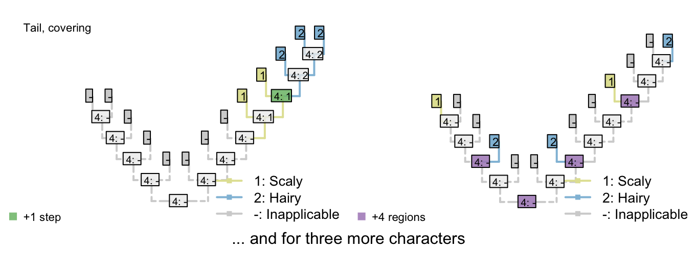
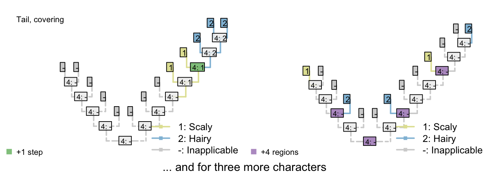

4 Inapplicable data in a parsimony setting
This is one of a series of vignettes that works through the inapplicable algorithm proposed by Brazeau et al. (2017).
We assume that you’ll already have read the description of our algorithm.
4.1 How this algorithm weights against multiple innovations
We discussed in an earlier vignette that, if we only penalise transformations between states in subsidiary characters, trees that imply multiple origins of the parent character receive much lower scores than those in which the parent character evolves once (but its subsidiary characteristics change multiple times).
Our algorithm counterbalances this by, in effect, imposing a cost for each additional origin of the parent character. At first blush, this sounds like it is weighting against multiple innovations of the parent character – but this isn’t so; it weights against multiple independent innovations of the SAME state (i.e. homoplasy), but if a red tail evolved here and a blue tail evolved there, then two innovations of the tail imposes a cost of one (additional region) for tail colour, whereas a single innovation of the tail would also impose a cost of one (transformation) for tail colour. The additional origin of the tail can
- This has a side-effect that we’ll study with an invariant character
4.2 Multiple dependencies
It’s not a problem to have characters dependent on characters that are dependent on characters. Consider the following character heirarchy:
- Appendages: (0), absent; (1), present.
- Appendage termination: (0), blunt; (1), claw; (2), sucker.
- Claw morphology: (0), smooth; (1), serrated.
- Sucker morphology: (0), round; (1), polygonal.
The included taxa may or may not bear appendages; if they do, then the appendages may end either with either claws or suckers, or neither (but not both). Claws come in two flavours, smooth and serrated; suckers come in two shapes, rounded and polygonal.
If character 1 (appendages) is absent, then characters 2–4 are inapplicable. Otherwise, charcter 2 (appendage termination) must take one of the three applicable values.
If character 2 (termination) has state 0 (blunt), then characters 3 and 4 (morphology of claw / sucker) are inapplicable.
If character 2 (termination) has state 1 (claw), then character 3 (claw morphology) is applicable and character 4 (sucker morphology) is inapplicable.
If character 2 (termination) has state 2 (sucker), then character 3 (claw morphology) is inapplicable and character 4 (sucker morphology) is applicable.
A sample character matrix might look like this:
| A | B | C | D | E | F | G | H | I | J | K | L | M | |
|---|---|---|---|---|---|---|---|---|---|---|---|---|---|
| Appendages: (0), absent; (1), present. | 0 | 0 | 0 | 1 | 1 | 1 | 1 | 1 | 1 | 1 | 1 | 1 | 1 |
| Appendage termination: (0), blunt; (1), claw; (2), sucker. | - | - | - | 0 | 0 | 1 | 1 | 1 | 1 | 2 | 2 | 2 | 2 |
| Claw morphology: (0), smooth; (1), serrated. | - | - | - | - | - | 0 | 0 | 1 | 1 | - | - | - | - |
| Sucker morphology: (0), round; (1), polygonal. | - | - | - | - | - | - | - | - | - | 0 | 0 | 1 | 1 |
Which would plot on a tree thus:

4.3 A parsimony uninformative character that informs parsimony!
All tails are blue. Let’s say that they are all blue for some complex molecular reason, such that it is most parsimonious if “blueness” has a single evolutionary origin.
A B C D E F G H Tail: (0), absent; (1), present 0 0 0 0 1 1 1 1 Tail colour: (-), inapplicable; (1), blue - - - - 1 1 1 1 Body colour: (1), black; (2), white 1 1 2 2 2 2 1 1 - This complex molecular reason is grounds to suspect that the tails have a common ancestor
- More formally, we wish to attribute this complex molecular reason to common ancestry, rather than homoplasy
Thus “blueness” represents a separate character that has the same distribution as tails (or a sbuset thereof, if some tails are of uncertain colour)
Let’s compare two trees. One groups taxa based on the presence of tails; the other groups taxa based on body colour.

 

So the tree on the left, which reconstructs a single origin of the tail, a single origin of a blue tail colouration, and two changes in body colour, is preferred to the tree on the right, which reconstructs a single change in body colour but two origins of the tail, and two origins of blue colouration on the tail.
We should include this character if it’s meaningful. But not if it’s not (e.g. number of base pairs in a tail).
4.3.1 Difficulties
Here are some marginal cases where discretion is required.
Here are some trees that show why we would code things our way this is why you need to look at your data carefully and see whether you like what your mode of coding is implying!
Return to index | Coding neomorphic characters | Coding ambiguous data
Agnarsson, I., & Miller, J. A. (2008). Is ACCTRAN better than DELTRAN? Cladistics, 24(6), 1032–1038. doi:10.1111/j.1096-0031.2008.00229.x
Brazeau, M. D., Guillerme, T., & Smith, M. R. (2017). Morphological phylogenetic analysis with inapplicable data. bioR\(\chi\)iv. doi:10.1101/209775
Fitch, W. M. (1971). Toward defining the course of evolution: minimum change for a specific tree topology. Systematic Biology, 20(4), 406–416. doi:10.1093/sysbio/20.4.406
Maddison, W. P. (1993). Missing data versus missing characters in phylogenetic analysis. Systematic Biology, 42(4), 576–581. doi:10.1093/sysbio/42.4.576
References
Brazeau, M. D., Guillerme, T., & Smith, M. R. (2017). Morphological phylogenetic analysis with inapplicable data. bioR\(\chi\)iv. doi:10.1101/209775